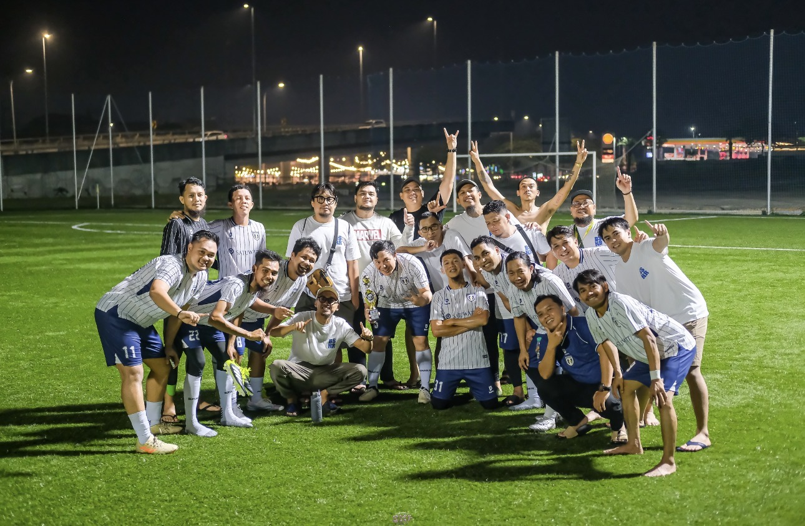
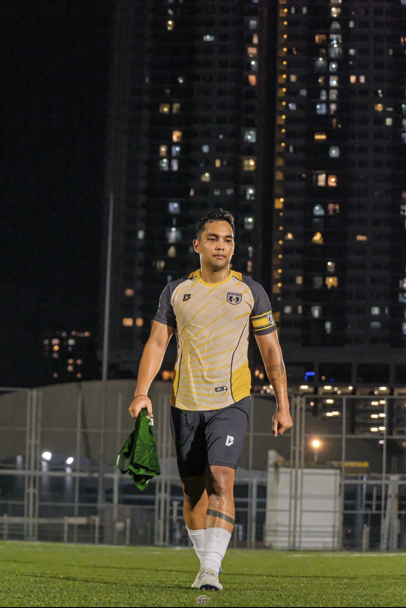

Life — Travel · Football
Life — Travel · Football
It started as a group chat message. "Hey, let's do KL again." That's it. That's the origin story. Somehow that one message turned into booked flights, packed jerseys, and three football matches against Malaysian teams who definitely trained harder than us. Was it for football? Technically. Was it really just an elaborate excuse to eat nasi lemak and drink coffee for seven days straight? Also yes. Both are correct.
We landed on the 10th. Late. Flight delayed. Of course it was. Nothing says "holiday loading" like arriving past midnight with zero energy and maximum hunger.
First time in JB for me, and honestly? I liked it. Clean layout, slower pace, less chaotic than KL. Livable, in a good way. Good place tbh, but for me 3 days max. Moving on.
Then came the first match. Kaki Libas FC. The name roughly translates to "the ones who slaughter someone's feet." Scary? Of course! And they played like the name suggested. Not dirty, just good. Fun guys, solid skills, zero mercy. We lost 9-4. I was not shocked. About 80% of my team is 35 and above. These are men with responsibilities and tired knees who showed up for the experience. The scoreline was simply part of that experience.
Post-match we ate. Obviously. Nasi lemak, because where else are you going to start. It's good. Really good actually. But Indonesian food? Still undefeated. Not even a contest. Sorry Malaysia, you did very great tho.

Match one against Kaki Libas FC. The name said it all.
Next morning, double-decker bus to KL. First time for me. Yes I know, I know.
I sat downstairs, away from the group. Introvert mode fully activated. Spent the whole ride staring out the window processing the 9-4 quietly. Very cinematic, cool me huh?
Arriving in KL felt exactly like the first time. Immediately overwhelmed. Pavilion Mall just hits different every single time. We stayed at the same apartment as the last trip, right across from Pavilion. Strategic. Everything is walkable, there are approximately one thousand food options within five minutes, and the air conditioning works. Thank God!
Two days we kept completely free. No agenda, no schedule, no obligations. Just wandering around, eating, shopping, eating again. The kind of days that look boring on paper and somehow end up being the best ones.

KL. No agenda, no schedule. Just walking and eating. The best kind of day.
May 14th. I booked a Grab an hour before kickoff because I am a responsible adult who plans ahead. KL traffic near Pavilion said absolutely not. The field was 2-3 kilometres away. I almost missed my own match. In a foreign country. After travelling ten days specifically for this. Incredible scenes.
I made it though. And we won 3-2. I got two assists. Not making a big deal out of it. Just mentioning it.
Quick context: I'm the youngest on this team by quite a margin. Which means I'm expected to run everywhere, cover everything, and stay sharp for the full 90. Tiring? Objectively yes. Does all of that disappear the moment the final whistle goes and you've won? Completely. Every time without fail.
Denzene were competitive, intense, but always clean. No reckless tackles, just two teams genuinely trying to win. Best kind of match. Afterwards everyone was shaking hands and laughing like old friends. That's football, and that's why we do it.
We celebrated by eating too much, obviously. I tried Musang King durian that night. Incredible fruit, genuinely incredible. The price however — with rupiah this weak against MYR right now — was a different kind of experience. I had one serving and made peace with it.

Match two, Denzene FC. We won 3-2. Two assists. Just mentioning it.
May 15-16 were ours. I had a half-plan to go to Genting, take the gondola up. Then I looked at my energy levels and quietly cancelled that plan. Everything I needed was already around me. We played billiards, walked around, sat somewhere cold eating ice cream because KL in May is genuinely trying to finish you. RIP my body temperature.
I'll keep this short because honestly some things are better left unprocessed. They were good. Every single position, every line, just good. We lost. I don't remember the exact score which probably tells you everything you need to know. They weren't dirty, just very very motivated to win, which made everything intense in a way that was more exhausting than fun. Everyone walked away healthy though. We move on. No notes.
After the final whistle we ended up at a foodcourt near Kampung Baru. Big place, packed, well-known. Most people there were Indonesian, which you could tell immediately from the accent. You can move to KL, build a life here, spend years here. The accent doesn't go anywhere. It stays. I respect that deeply.
I had sweet and sour gurame that night. Still thinking about it honestly, one of the best meals of the whole trip.
Not one day passed without at least one session. Usually two. Sometimes three, moving spot to spot, sitting for two or three hours each time just talking. The kind of conversations that only happen over coffee, with people who also think moving to a different café after two hours is completely normal and necessary.
People ask if it gets tiring. It doesn't. That's where the energy actually comes from. That's the whole system.

The real itinerary. Café to café, conversation to conversation.
May 17th, everyone headed back to Indonesia. I continued to Bali to meet family. Different direction, same trip energy.
Genuinely one of the best weeks in a while. Football was the excuse, the city was the point. The food, the people, the chaos, the coffee. All of it.
Apparently there's talk of doing this again next year. Different city, same group, probably another brutal first match scoreline. I'll be there regardless.
See you on the next one.
← Back to Life